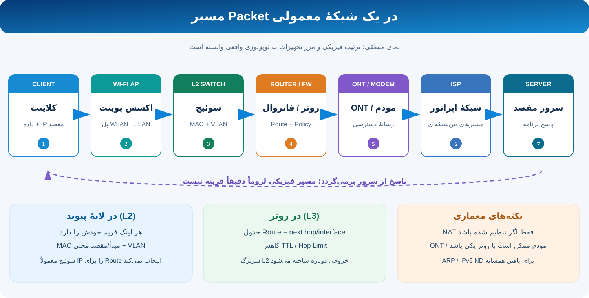

۱. مسیر یک Packet از کلاینت تا سرور

کلاینت مقصد IP را بررسی میکند. اگر مقصد خارج از subnet محلی باشد، بسته را به MAC آدرس Default Gateway میفرستد؛ برای یافتن MAC مقصد محلی/دروازه معمولاً ARP یا Neighbor Discovery بهکار میرود.
- Access Point: پلزدن ترافیک WLAN به LAN در حالت رایج.
- Switch: ارسال فریم بر پایهٔ MAC و VLAN.
- Router/Firewall: بررسی جدول Route، اعمال سیاست، کمکردن TTL/Hop Limit و ساخت سربرگ لایهٔ پیوندِ خروجی جدید.
- ONT/Modem: تبدیل/انتقال رسانهٔ دسترسی؛ در دستگاههای یکپارچه ممکن است نقش روتر هم داشته باشد.
NAT فقط در صورت پیکربندی و نیاز مسیر رخ میدهد. مسیر برگشت معمولاً برعکس است، اما الزاماً همان مسیر فیزیکی را طی نمیکند.